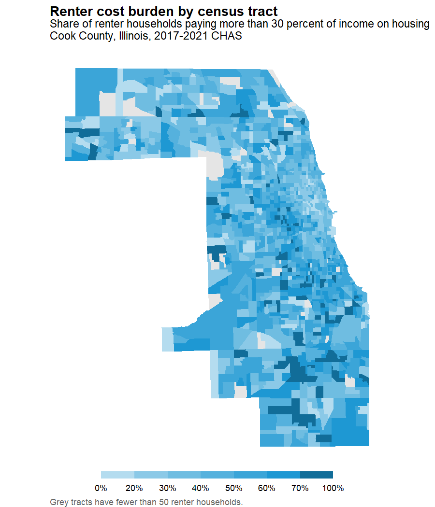

Housing Affordability (CHAS)
get_chas_housing_affordability.Rmdget_chas_housing_affordability() returns HUD’s
Comprehensive Housing Affordability Strategy (CHAS) data, which
cross-tabulate American Community Survey housing-need measures – cost
burden, overcrowding, and related housing problems – by tenure,
household income, race and ethnicity, and household type. Tract-level
data are read from a parquet mirror on Box; every other geography comes
from HUD’s API (api = TRUE).
This vignette measures cost burden: the share of households that spend more than 30 percent of their income on housing. It looks at cost burden by household income, then maps it across the census tracts of a single county. CHAS expresses household income relative to HUD Area Median Family Income (HAMFI), the income measure commonly shortened to AMI.
Note that this function still carries a “not fully QCed” warning, which is suppressed in the output below.
Finding the right variables
The tract file has roughly 4,600 columns spread across two dozen CHAS
tables, so the first job is working out which ones you want.
get_chas_codebook() returns the CHAS data dictionary as a
tibble: one row per variable, with the descriptive name the data will
carry, the source’s own variable code, and a definition.
library(climateapi)
library(dplyr)
library(stringr)
library(tidyr)
library(ggplot2)
library(sf)
library(tigris)
codebook = get_chas_codebook(end_year = 2021)
codebook %>%
filter(chas_table == "T8") %>%
select(column_name, column_type, definition) %>%
head(4)
#> # A tibble: 4 × 3
#> column_name column_type definition
#> <chr> <chr> <chr>
#> 1 total_occupied_units Total Total: Occu…
#> 2 owner_occupied Subtotal Owner occup…
#> 3 owner_occupied_income_lte_30_hamfi Subtotal Owner occup…
#> 4 owner_occupied_income_lte_30_hamfi_cost_burden_lte_30 Subtotal Owner occup…The descriptive names abbreviate the phrases CHAS repeats in nearly
every definition: lte and gt for “less than or
equal to” and “greater than”, hh for household,
ppr for persons per room, and nocalc where the
source could not compute a cost burden. ?get_chas_codebook
lists them all, and the definition column always keeps the
source’s full wording.
Table 8 nests households by tenure, then income relative to HAMFI, then cost burden, then whether the unit has complete plumbing and kitchen facilities. We want the subtotal at the cost-burden level, which means keeping the rows whose definition mentions cost burden but not facilities.
cost_burden_variables = codebook %>%
filter(
chas_table == "T8",
column_type == "Subtotal",
str_detect(definition, "cost burden"),
!str_detect(definition, "facilities"))
nrow(cost_burden_variables)
#> [1] 40
cost_burden_variables %>%
select(column_name_source, column_name) %>%
head(4)
#> # A tibble: 4 × 2
#> column_name_source column_name
#> <chr> <chr>
#> 1 T8_est4 owner_occupied_income_lte_30_hamfi_cost_burden_lte_30
#> 2 T8_est7 owner_occupied_income_lte_30_hamfi_cost_burden_gt_30_lte_50
#> 3 T8_est10 owner_occupied_income_lte_30_hamfi_cost_burden_gt_50
#> 4 T8_est13 owner_occupied_income_lte_30_hamfi_cost_burden_nocalc_none…That is 40 variables: two tenures, five income bands, and four cost-burden categories.
Pulling the data
The codebook’s column_name_source values are what
columns expects, so the selection above can be handed
straight to the data call.
chas = get_chas_housing_affordability(
geography = "tract",
end_year = 2021,
columns = cost_burden_variables$column_name_source)
dim(chas)
#> [1] 85395 42The columns come back with the descriptive names from the codebook rather than the source’s codes:
names(chas)[3:5]
#> [1] "owner_occupied_income_lte_30_hamfi_cost_burden_lte_30"
#> [2] "owner_occupied_income_lte_30_hamfi_cost_burden_gt_30_lte_50"
#> [3] "owner_occupied_income_lte_30_hamfi_cost_burden_gt_50"geoid is the plain eleven-digit census tract identifier,
so it joins directly to tigris, tidycensus,
and anything else keyed on standard tract codes. (The source publishes
it with a summary-level prefix, 1400000US01001020100, which
the function strips.) geoid and year are
always returned, whether or not you ask for them.
head(chas$geoid, 3)
#> [1] "01001020100" "01001020200" "01001020300"The first five characters are the state and county, so a single county is one filter away.
Cost burden by income band
The descriptive names can be parsed back into the dimensions they encode, which turns the wide table into one row per tract, tenure, income band, and cost-burden category.
burden_long = cook_county %>%
select(-year) %>%
pivot_longer(-geoid, names_to = "variable", values_to = "households") %>%
mutate(
tenure = str_extract(variable, "owner|renter"),
income_group = str_extract(variable, "(?<=_income_).*(?=_hamfi)"),
cost_burden = str_extract(variable, "(?<=_cost_burden_).*"))
burden_long %>%
distinct(tenure, income_group, cost_burden) %>%
head(4)
#> # A tibble: 4 × 3
#> tenure income_group cost_burden
#> <chr> <chr> <chr>
#> 1 owner lte_30 lte_30
#> 2 owner lte_30 gt_30_lte_50
#> 3 owner lte_30 gt_50
#> 4 owner lte_30 nocalc_nonegative_incomeA household is conventionally called cost burdened when it spends
more than 30 percent of its income on housing, which here means either
of the two categories above lte_30. Households whose burden
could not be computed – nocalc, those reporting no or
negative income – belong in neither the numerator nor the denominator of
that share, so they are dropped first.
burden_shares = burden_long %>%
filter(cost_burden != "nocalc_nonegative_income") %>%
summarize(
.by = c(tenure, income_group),
households_total = sum(households, na.rm = TRUE),
households_cost_burdened = sum(
households[cost_burden != "lte_30"], na.rm = TRUE)) %>%
mutate(share_cost_burdened = households_cost_burdened / households_total)
burden_shares
#> # A tibble: 10 × 5
#> tenure income_group households_total households_cost_burdened
#> <chr> <chr> <dbl> <dbl>
#> 1 owner lte_30 96085 87199
#> 2 owner gt_30_lte_50 111376 70859
#> 3 owner gt_50_lte_80 174976 73697
#> 4 owner gt_80_lte_100 117261 30398
#> 5 owner gt_100 663773 49366
#> 6 renter lte_30 208957 175292
#> 7 renter gt_30_lte_50 144884 112324
#> 8 renter gt_50_lte_80 159864 60379
#> 9 renter gt_80_lte_100 78692 13122
#> 10 renter gt_100 247469 11804
#> # ℹ 1 more variable: share_cost_burdened <dbl>Cost burden falls steeply as income rises: most households below 30 percent of area median income are burdened, against a small minority of those above it.
Mapping renter cost burden by tract
The same reshaped table summarizes to one row per tract. Here we keep renters only, and compute the share paying more than 30 percent of income on housing.
renter_burden = burden_long %>%
filter(tenure == "renter", cost_burden != "nocalc_nonegative_income") %>%
summarize(
.by = geoid,
renter_households = sum(households, na.rm = TRUE),
renter_households_cost_burdened = sum(
households[cost_burden != "lte_30"], na.rm = TRUE)) %>%
mutate(
share_cost_burdened = renter_households_cost_burdened / renter_households)
summary(renter_burden$share_cost_burdened)
#> Min. 1st Qu. Median Mean 3rd Qu. Max. NA's
#> 0.0000 0.3296 0.4507 0.4510 0.5688 1.0000 5Tracts with very few renters produce unstable shares, so we drop those with fewer than 50 renter households before mapping.
cook_tracts = tracts(state = "17", county = "031", year = 2021, cb = TRUE)
renter_burden_map = cook_tracts %>%
transmute(geoid = GEOID) %>%
left_join(
renter_burden %>% filter(renter_households >= 50),
by = "geoid",
relationship = "one-to-one")
## how many tracts carry a mappable share, out of how many drawn
sum(!is.na(renter_burden_map$share_cost_burdened))
#> [1] 1301
nrow(renter_burden_map)
#> [1] 1331
## every drawn tract found a CHAS record; the shortfall above is the renter filter
sum(!renter_burden_map$geoid %in% renter_burden$geoid)
#> [1] 0
urban_blues = c(
"#cfe8f3", "#a2d4ec", "#73bfe2", "#46abdb", "#1696d2", "#12719e", "#0a4c6a")
ggplot(renter_burden_map) +
geom_sf(aes(fill = share_cost_burdened), color = NA) +
## most tracts fall between 30 and 60 percent, so a continuous 0-100 percent ramp
## would render nearly the whole county in one shade; binning at ten-point intervals
## keeps the differences legible
scale_fill_stepsn(
colours = urban_blues,
breaks = seq(0.2, 0.7, by = 0.1),
limits = c(0, 1),
labels = scales::percent,
na.value = "grey90",
name = NULL,
guide = guide_coloursteps(barwidth = 16, barheight = 0.5, show.limits = TRUE)) +
labs(
title = "Renter cost burden by census tract",
subtitle = paste(
"Share of renter households paying more than 30 percent of income on housing",
"Cook County, Illinois, 2017-2021 CHAS",
sep = "\n"),
caption = "Grey tracts have fewer than 50 renter households.") +
theme_void() +
theme(
legend.position = "bottom",
plot.title = element_text(face = "bold", hjust = 0),
plot.subtitle = element_text(hjust = 0, margin = margin(b = 8)),
plot.caption = element_text(hjust = 0, color = "grey40"))
Cost burden is widespread rather than concentrated: 44 percent of Cook County renters pay more than 30 percent of their income on housing, the tract median is 45 percent, and 507 of the 1,301 mapped tracts are above 50 percent. What variation there is runs north to south rather than east to west. Tracts in the southern half of the county average 50 percent against 40 percent in the northern half, while the eastern and western halves are indistinguishable at 45 and 46 percent. Of the 86 tracts above 70 percent, 66 lie in the southern half.